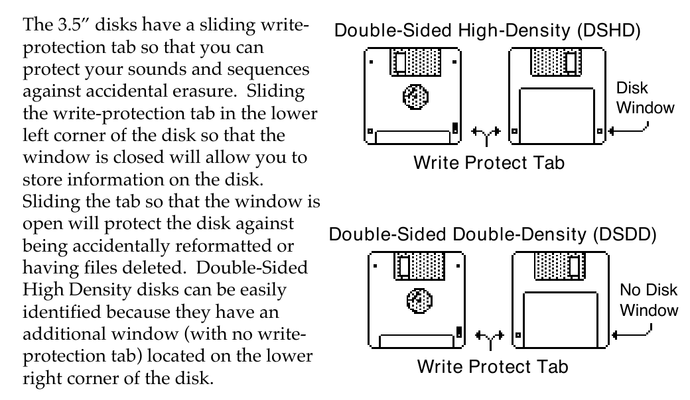

Performance / Composition Synthesizer · Version 3.0
Section 13 — Storage
The Storage page provides data storage functions that enable you to:
• save and load Program, Preset, Sequencer and System data to disk,
• save and load Sampled Sounds and their associated parameters, and
• transmit dumps containing Programs, Presets, and Sequencer data via MIDI system exclusive messages.
The Storage page presents a series of menus containing command options which are selected by using the soft buttons.
• Pressing Storage will always display the Storage page:
From the Storage page you can select which kind of data storage you want to use — Disk or MIDI SYS-EX storage. A SCSI option is available for loading Sampled Sounds from EPS/EPS-16 PLUS/ASR-10 format SCSI Storage Devices when the optional SP-4 interface is installed. The TS-10 SCSI port will only read from SCSI; it will not write to SCSI Storage Devices. When the SP-4 is installed, the STORAGE page will display a new active field (explained later), as below:
Pressing *LOAD* is the equivalent of pressing DISK followed by *LOAD* on the Disk page.
Pressing the Storage button twice in a row performs the same function. Since Disk storage is the most convenient and commonly used form of storage, we’ll cover that first.
Disk Storage — Using the Disk Drive to Save and Load Data
The TS-10’s built-in disk drive is used to store all your program, preset and sequencer data, as well as System Exclusive messages from other MIDI devices. The TS-10 uses a Quad-density disk drive that can store 1600 Kilobytes of data on a Double-Sided High-Density (DSHD) 3.5” microfloppy disk and 800 Kilobytes of data on a Double-Sided Double-Density (DSDD) 3.5” microfloppy disk. The disks are enclosed in a protective plastic carrier with an automatic shutter to protect the diskette from physical damage. It is important not to alter this carrier in any way.

Floppy disks are a magnetic storage medium and should be treated with the same care you’d give important audio tapes. Just as you would use high quality audio tapes for your important recording needs, we recommend using high-quality floppy disks for your TS-10. On the following page are a few Do’s and Don’t’s concerning disks and the disk drive.
Do’s:
• Use either Double-Sided High-Density (DSHD) or Double-Sided Double-Density (DSDD) 3.5 inch Micro-floppy disks. Both types are available from almost any computer store and many music stores carry them as well.
• Keep your disks and the disk drive clean and free of dust, dirt, liquids, etc.
• Only transport your unit with nothing in the drive.
Don’t’s:
• Don’t use Single-Sided (SSDD or SSSD) disks. These disks have not passed testing on both sides. While a single-sided disk might work successfully with the TS-10, it is possible that you will eventually lose important data to a disk error if you try using Single-Sided disks.
• Don’t put anything other than a disk or the plastic sheet in the disk drive.
• Don’t transport the unit with a disk in the drive.
• Don’t expose disks to extremes of temperature. Temperatures below 50˚ F and above 140˚ F can damage the plastic outer shell.
• Don’t expose your disks to moisture.
• Don’t dry your disks in a microwave oven.
• Don’t subject disks to strong magnetic fields. Exposure to magnetic energy can permanently damage the information on the disk. Keep disks away from speaker cabinets, tape decks, power cables, airline x-ray equipment, power amplifiers, TV sets, and any other sources of magnetic energy.
• Don’t eject the disk while the drive is operating (i.e. when the disk drive light is on).
TS-10 Disk File Types
The TS-10 disk storage system has been designed to allow maximum flexibility in saving, loading and organizing your sound and sequence data. Consequently, for each type of data there are several different types of files that can be saved:
Programs:
• 1-PROGRAM — contains a single TS-10 Program.
• 6-PROGRAMS — contains a bank of 6 TS-10 programs, as displayed on the Program Bank pages 0-9. This file type lets you organize programs into groups of six that can be saved and loaded back into any RAM bank you choose.
• 60-PROGRAMS — contains one BankSet of 60 User RAM Programs.
• 120-PROGRAMS — contains all of the User RAM Program memory (both BankSets).
Presets:
• 1-PRESET — contains a single TS-10 Preset.
• 60-PRESETS — contains one BankSet of 60 TS-10 User RAM Presets.
• 120-PRESETS — contains all of the User RAM Preset memory (both BankSets).
Sequence/Song:
• 1-SEQ/SONG — contains a single TS-10 sequence or song.
• 30-SEQ/SONGS — contains 30 TS-10 sequencer locations, saved from either the lower half of the sequencer memory (Banks 0-4) or the upper half (Banks 5-9). A 30-SEQ/SONGS file can be loaded into either the upper or lower half.
• 60-SEQ/SONGS — contains the entire sequencer memory (Banks 0-9) and the global Click and Sequencer Control page settings.
Whenever you save a 30 or 60 Seq/Song file to disk, you will be asked whether you want to also save internal programs (either 60 or the entire 120) in the same file along with the sequencer data.
Saving 60 Programs with a 30-SEQ/SONGS file containing Seq/Song Banks 0-4 will save the contents of Program BankSet U0. Saving 60 Programs with a 30-SEQ/SONGS file containing Seq/Song Banks 5-9 will save the contents of Program BankSet U1. Saving 60 Programs with a 60-SEQ/SONGS file will save the contents of Program BankSet U0. A 60 SEQ/SONGS file will also allow you to save the currently loaded contents of the Sample Banks with it. This lets you keep the sequences and their appropriate programs and Sample Banks information together when reloading the data.
MIDI System Exclusive data:
• SYS-EX-DATA — In addition to the above types of TS-10 data, you can use the disk drive to save system exclusive data from other MIDI devices. The TS-10 can thus serve as the “librarian” for your other MIDI gear. This function is covered at the end of this section.
System File:
• SYSTEM-SET-UP — System set-up files let you save the system, or “global” parameters, those contained on the System and MIDI Control pages, so that you can save and re-load a new system configuration in seconds. This is handy if you use the TS-10 in a number of different applications that require different settings for MIDI mode, MIDI base channel, master tuning, etc.
Sampled Sounds:
• SAMPLE-BANKS — remembers up to 20 Sampled Sound names (ten in BankSet 8 and ten in BankSet 9, if applicable) as well as their source disk(s), file paths, and bank locations. Loading a Sample-Banks file will allow you to Auto-Load the Sampled Sound files back into the same location(s) that they were in at the time the Sample-Banks file was saved.
• SAMPLE-EDITS — contains parameter edits of Sampled Sounds.
Disk Capacity — Bytes, Blocks, and Files
The TS-10 has a high-density (HD) drive, allowing you to use both Double-Sided High-Density and Double-Sided Double-Density disks:
• Double-Density disks — can store 800 kilobytes of TS-10 data, which translates into about 1600 Blocks.
• High-Density disks — can store 1600 kilobytes of data, which translates into about 3200 Blocks.
A Block is a handy unit that the TS-10 uses to measure internal and disk memory — 1 Block=512 bytes=256 sample words; 2 Blocks=1k bytes; 4 Blocks=1k sample words.
TS-10 disk files vary in size — how many will fit on a disk depends on the number and size of the files. Whenever you are on the DISK LOAD page the display shows the size in blocks of each file on the disk. When you are on the DISK SAVE page the display shows the number of free blocks available on the disk in the drive.
| Disk Type | High -Density | Double-Density |
|---|---|---|
| Kilobytes | 1600 | 800 |
| Sample Words | 800k | 400k |
| Blocks | 3176 | 1585 |
There are limits to the number of files on a TS-10 disk:
• Each disk can hold a maximum of 78 files.
• A disk can hold up to 60 files of any one file type, but not more than the total of 78 files of all types for a single disk.
File Banks
A unique feature of the TS-10 called File Banks, allows you to quickly and easily locate the disk file you want to load or delete. File Banks provide a graphic way for you to organize and view disk files, and eliminate the need to scroll through long lists of files.
Whenever loading or deleting a file, after you have selected the file type you want, pressing the 10 Bank buttons beneath the display will cause all the disk files of that type to be shown in groups of six, just like sound or sequence banks. Pressing the soft button next to a file installs that file as the one to be loaded, deleted etc.
When saving data to disk you can, if you wish, specify a particular file bank location for that file to be displayed in. This gives you a high degree of control over how your disk files are organized and displayed.
TS-10 Disk Functions
The TS-10’s disk functions are all handled from the Storage page. Press the Storage button to get to this page, then press the soft button beneath DISK. When you select DISK from the Storage page, the display shows the disk storage menu:
From here you select which of the 6 disk functions you want:
• FORMAT — This formats a blank disk for use with the TS-10.
• COPY — This allows you to make a backup copy of an entire TS-10 disk.
• RENAME — allows you to change the disk name of a TS-10 disk.
• SAVE — save to disk Program, Preset, Sequencer, Sys-Ex Data, System Set-up, or Sampled Sound files.
• LOAD — load from disk Program, Preset, Sequencer, System Set-up, or Sampled Sound files; also load System Exclusive data for transmission to a remote MIDI device.
• DELETE — allows you to delete (or remove) any file from the disk.
FORMAT — Formatting a Blank Disk
Before a disk can be used by the TS-10 to store data, it must be formatted. Formatting puts information on the disk that the TS-10 needs to read and write files. In addition to formatting a blank disk, the Format procedure can be used to reformat a disk that has been used with some other device, such as a personal computer or another musical instrument. Note that any data (of whatever type) on a disk will be lost when the disk is formatted by the TS-10.
To Format a blank disk:
• Insert a blank, Double-Sided Double-Density or High Density 3.5” micro-floppy disk into the disk drive, with the label-side facing up, and the metal shutter facing away from you. Make sure the plastic write-protect tab is in the closed position (no light showing through the window).
• Press Storage.
• Press DISK. The Disk Storage menu appears (as shown earlier).
• Press FORMAT.
• The display shows:
• Use the Up/Down Arrow buttons or the Data Entry Slider (or Keyboard Naming if enabled) to change the first character of the name and the left and right soft buttons on the screen to move the cursor to the next character. The last three alpha-numeric characters can only be numbers. Once you have the name that you want:
• SAVE saves the name shown into memory (battery backed up RAM). This name is also saved with global parameters when you SAVE SYSTEM SET-UP (on the Disk Save page). This is useful for changing the default disk name used for formatting.
• Pressing *EXIT* will return you to the Disk Storage page with no harm done.
• Press *FORMAT* to proceed. The display shows FORMAT DISK ALL DISK FILES WILL BE ERASED. Press *YES* to proceed, or *NO * to abort the command.
• While the TS-10 is formatting the disk, the display reads FORMATTING DISK PLEASE WAIT... The formatting process takes about 80 seconds.
• When the formatting is done, the display reads DISK COMMAND COMPLETED, and then you are returned to the Storage page. The disk is ready to accept program, preset, sequencer, system, Sys-Ex, or Sampled Sound data.
FORMAT DISK Error Messages:
There are a number of messages you might encounter while formatting a disk:
• DISK DRIVE NOT READY — No disk in the drive.
• DISK FORMAT FAILURE -- DISK IS UNUSABLE. This indicates a defective disk. If you get this message we advise that you throw out the disk in question. Try again with another disk.
• DISK WRITE-PROTECTED — The plastic write-protect tab in the lower-left corner of the disk must be closed (so you can’t see through the hole) before anything can be written to the disk.
Close the write-protect tab and try again.
COPY — Making a Backup Copy of a Disk
The COPY function lets you duplicate the contents of one entire disk (the source disk) on another disk (the destination disk). It is a good practice to regularly back up your valuable data in this way.
Be Careful!
This procedure uses the sequencer memory to temporarily hold the information while copying it between disks. Anything in the sequencer memory before you start will be erased. Save any important sequencer data before copying a disk.
To Make a Backup Copy of a Disk:
• Slide the plastic write-protect tab on the source disk — the original — so that the disk is write protected (you can see through the hole). This is an extra precaution to safeguard the data.
• Press Storage and then select DISK.
• Press COPY. The display shows SEQUENCER DATA WILL BE ERASED.
• Press *YES* (or press *NO* to cancel and save the data before proceeding). The display shows:
• Insert the destination disk (the copy) and press *OK*. If the destination disk is not formatted, the TS-10 will format it before proceeding.
• After a moment, the TS-10 will ask INSERT SOURCE DISK. Insert the write-protected source disk (the original) and press *OK*.
• The TS-10 will load the data from the source disk into the sequencer memory, and then save it to the destination disk, asking you to insert the appropriate disks as it needs them. Each time, insert the proper disk and press *OK*. (Note that you can press *QUIT* at any time to abort the procedure.)
• The Copy disk procedure requires about three disk swaps with the standard TS-10 memory configuration.
• Once the Copy procedure is successfully done, the display will read DISK COMMAND COMPLETED, and then return to the Storage page.
DISK COPY Error messages:
• DISK WRITE-PROTECTED — A write-protected disk (window open) was inserted when INSERT DESTINATION DISK was displayed. The Destination Disk must have the Write- protect window closed.
• DISK IS NOT SOURCE DISK or DISK IS NOT DESTINATION DISK — You put the wrong disk in the drive when prompted for a certain disk. This is not fatal; it doesn’t abort the Copy procedure. Just insert the proper disk and proceed.
RENAME — Changing a Disk's Name
The RENAME function lets you change the seven character Disk I.D. to a new name The disk name is used to give each of your TS-10 disks a unique identity. The name of a newly formatted TS-10 disk defaults to TSD-000. Note that you cannot rename a Sampled Sound disk.
• Press Storage and then select DISK.
• Press RENAME. The display shows:
• Select YES to start renaming using the name from the disk in drive as a starting point.
• Select NO to start renaming with your own custom disk name that is currently stored in memory as a starting point.
• After selecting either YES or NO, the display shows the following:
• Use the Up/Down Arrow buttons to change the first character of the name and the left and right buttons on the screen to move the cursor to the next character. The last three alpha- numeric characters can only be numbers. Once you have the name that you want:
• SAVE saves the name shown into memory (battery backed up RAM) as your custom disk name. This custom disk name is also saved with global parameters when you SAVE SYSTEM SET-UP (on the Disk Save page). Saving a custom disk name allows you to easily rename and format a series of disks by simply updating the number portion of the name.
• RENAME will write the name shown above onto the disk in the drive.
• EXIT will abort this process, without changing the disk name.
SAVE — Saving Data to Disk
When you press SAVE from the Disk Storage menu, you will see the following display:
File Type
Source Bank or BankSet
Free disk blocks (some file types)
The display shows the File Type, the number of free blocks on the disk, and (for some file types) the Source Bank or BankSet, i.e. which BankSet or bank(s) you want to save. Note that you cannot save information to a Sampled Sound disk.
To Save data to disk:
• Insert a formatted TS-10 disk into the disk drive.
• When saving 1-PROGRAM, 1-PRESET or 1-SEQ/SONG, first make sure the program, preset or sequencer location you want to save is selected.
• Press Storage to go to the Storage Page.
• Press DISK. The Disk Storage menu appears.
• Press SAVE. The Save File display appears as shown above. The file type is underlined.
• Select the file type you want to save from among the available types:
1-PROGRAM 1-PRESET 1-SEQ/SONG SYS-EX-DATA
6-PROGRAMS 60-PRESETS 30-SEQ/SONGS SYSTEM-SETUP
60-PROGRAMS 120-PRESETS 60-SEQ/SONGS SAMPLE-BANKS
120-PROGRAMS SAMPLE-EDITS
• Select a source bank (if applicable). For the file types 6–PROGRAMS and 30–SEQ/SONGS, you will see a SELECT=BANK(s) location beneath the file type, and for the file types 60–PROGRAMS and 60–PRESETS you will see a SELECT=BANKSET location beneath the file type, as shown above. This defaults to the current BankSet (or bank). If you want to save a different BankSet (or bank) than what is showing, select this field and change it using the data entry controls.
• Press *YES*. The display showsthe Name File page.
• Name the file with a name of your choice using the data entry controls and the two cursor soft buttons, labeled LEFT and RIGHT, or you can use the keyboard to select characters and move the cursor (see below).
• Press *YES*. The display reads SAVING <FILENAME> while the data is being saved to disk.
Or Press *NO* to cancel the procedure for any reason. If you are saving a 30-SEQ/SONGS or 60-SEQ/SONGS file there are additional steps (see below).
• If there is a file of that type with the same name already on the disk, the TS-10 will ask
DELETE OLD VERSION? Press *YES* to save the file, replacing the one on the disk. This is for updating files to which you have made changes. Or press *NO* to abort the procedure.
• After the file is saved, the TS-10 returns to the Save File page so that you can save any other files you may want to save at that time.
Naming with the Keyboard
When the KBD-NAMING parameter on the System page is ON, the keyboard can be used for name data entry. Whenever a name field is active, pressing a key on the keyboard will enter the character assigned to that key or move the cursor. The 36 white keys are the digits 0..9 and letters A..Z, while the black keys provide a repeating set consisting of cursor left, cursor right, and 3 punctuation marks (space, dash, and plus). Period, slash, and star are only available using the Data Entry Slider or the Up/Down Arrows.
Cursor Cursor Space Dash Plus Each octave of black keys repeats the same 5
0 1 2 3 4 5 6 7 8 9 A B C D E F G H I J K L M N OP Q R S T U V W X Y Z
Saving Programs along with a 30-SEQ/SONGS File
When you save a 30-SEQ/SONGS file, the TS-10 gives you the option of saving Programs in the same file, so that you can keep the sequences and the Programs that go with them together.
After you have selected the 30-SEQ/SONGS file type, chosen either SELECT=BANKS 0-4 or 5-9, and pressed *YES*, the TS-10 offers you an option. The display shows:
Use the data entry controls to select whether (and how many) Programs will be saved in the same file with the sequence data:
• NO — Only the specified sequencer data will be saved, no Programs.
• 60 — When a 30-SEQ/SONGS file to be saved is from SELECT=BANKS 0-4, the BankSet U0 programs will be saved into the file along with the sequence data. When a 30-SEQ/SONGS file to be saved is from SELECT=BANKS 5-9, the BankSet U1 programs will be saved into the file along with the sequence data. The Programs will automatically be reloaded into the same User RAM location when the 30-SEQ/SONGS file is loaded, replacing the Programs that are there.
• 120 — All User RAM Programs will be saved into the file along with the sequence data (BankSet U0 and U1). The Programs will be reloaded into the internal memory when the 30-SEQ/SONGS file is loaded, replacing the programs that are there.
• After choosing the number of Programs to be saved, press *YES* to proceed.
Saving Sample-Banks along with a 60 SEQ/SONGS File
When you save a 60-SEQ/SONGS file, the TS-10 also gives you the option of saving the currently loaded contents of the Sample Banks, as well as the internal User RAM Programs, in the same file, so that you can store the Programs, and Sampled Sound data that the sequences and songs use all together in a single file.
After you have selected 60-SEQ/SONGS file type and pressed *YES*, the TS-10 offers you the first option. The display shows:
Use the data entry controls to select whether or not Programs will be saved in the same file with the sequence data:
• NO — Only the specified sequencer data will be saved, without Programs.
• 120 — All User RAM Programs will be saved into the file along with the sequence data (BankSet U0 and U1). The Programs will be reloaded into the internal memory when the 60-SEQ/SONGS file is loaded, replacing the Programs that are there.
• After choosing whether or not Programs will be saved, press *YES* to proceed. If any Sampled Sounds are currently loaded, the TS-10 offers you the second option. The display shows:
• Answering *YES* will save all of the Sampled Sound names (ten in BankSet 8 and ten in BankSet 9, if applicable) as well as their source disk(s), file paths, and bank locationswith the 60-SEQ/SONGS file.
• Answering *NO* will not save the Sample-Banks file with the sequence file.
Specifying a File Bank Location when Saving a File
If you follow the save procedure exactly as described earlier (pressing *YES* after naming the file) the data will automatically be placed in the first empty file bank location for that file type, starting from the first location in Bank 0 and going up from there.
However, you can specify a particular file bank for the file to be placed in:
• Press Storage, and select DISK, then SAVE. The Save File display appears.
• Select the desired file type and then press *YES*.
• Name the file with the name of your choice.
• Now you can press the Bank buttons (0-9) to see the file banks, which show all the files of that type on the disk, six at a time. For example:
File Bank Locations containing Files
Empty File Bank Locations
• File bank locations containing a file show the file name. Locations that show ***** are empty and are available for saving files to.
• Press the soft button next to any empty file bank location, and the TS-10 will immediately save the file in that location. This lets you organize your files into banks of your choosing for easy access when loading them later.
• If there is a file with the same name already on the disk in a different file bank location, the TS-10 will ask DELETE OLD VERSION? If you press *YES* the TS-10, will delete the original file and save the new one in the new location. Use this to change the bank in which a file is saved.
• Note that when you simply want to update an existing file, but not change its file bank location, it is not necessary to specify the location. Just press *YES* after naming the file and answer *YES* to DELETE OLD VERSION?
LOAD — Loading Data from Disk
When you press LOAD from the Disk Storage menu, you will see the following display:
File Size
File Name in blocks
File Type Destination Bank
(some file types)
The display shows the File Name which identifies the file that will be loaded if you press *YES*; the Size of the file in Blocks; the File Type and (for some file types) the Destination Bank, i.e. which bank(s) to load the data into. Only files of the type selected will be shown in the File Name field, or in file banks.
To Load a file from disk:
• Insert the disk containing the file data into the disk drive.
• Press Storage to go to the Storage Page.
• Press DISK. The Disk Storage menu appears.
• Press LOAD. The Load File display appears as shown above. The file type is underlined.
• Select the file type you want from among the available types:
1-PROGRAM 1-PRESET 1-SEQ/SONG SYS-EX-DATA
6-PROGRAMS 60-PRESETS 30-SEQ/SONGS SYSTEM-SETUP
60-PROGRAMS 120-PRESETS 60-SEQ/SONGS SAMPLE-BANKS
120-PROGRAMS SAMPLE-EDITS
• Press the soft button above the file name and use the data entry controls to find the file you want, or you can use the File Banks to quickly locate the file without scrolling (see below).
• Select a destination bank (if applicable). For the file types 6–PROGRAMS and 30–SEQ/SONGS, you will see a Bank destination, as shown above. For the file types 60–PROGRAMS and 60–PRESETS, you will see a BankSet destination This defaults to the same BankSet (or bank) the file was originally saved from. If you want a different destination bank, select this field and change it using the data entry controls.
• Press *YES*. The display reads LOADING FILE... while the data is being loaded. Or Press *NO* to cancel the procedure for any reason.
• After the file is loaded, the TS-10 returns to the Load File page so that you can load any other files you may want.
Where the data ends up depends on the file type and (where applicable) the destination bank selected:
• 1-PROGRAM file — once loaded, the program is placed on the Write page, where you can save it to any internal User RAM location as detailed in Section 8 — Understanding Programs.
• 6-PROGRAMS file — the bank of 6 programs is loaded into the destination Bank (U0-0 to U1-9) specified before pressing *YES*.
• 60-PROGRAMS file — the 60 programs will be loaded into either BankSet U0 or U1 as specified before pressing *YES*.
• 120-PROGRAM file — replaces all User RAM program memory locations (both BankSets).
• 1-PRESET file — the preset is loaded as the Edit Preset, and can be saved to memory as detailed in Saving a Preset in Section 4 — Understanding Presets.
• 60-PRESETS file — will be loaded into either BankSet of preset memory as specified before pressing *YES*.
• 120-PRESET file — replaces the internal preset memory (both BankSet locations).
• 1-SEQ/SONG file — After selecting the single sequence/song file to be loaded and selecting *YES* on the Load File page, you are shown a prompt page which allows you to select the bank location into which the sequence/song file will be loaded. The default value is the first available location, and you may accept this choice, or you may select a different location by using one of two methods. Pressing a Bank button will temporarily show the corresponding sequence bank page, and while the bank button is held, you may select the destination Location using the soft buttons. If your selection is a -BLANK- location, the display will revert to the prompt page with the new location selected. You may also directly select the location number using the data entry controls.
• 30-SEQ/SONGS file — the 30 sequence/songs will be loaded into either the lower half of the sequencer memory (Banks 0-4) or the upper half (Banks 5-9), specified before pressing *YES*.
If 60 or 120 programs were saved in a 30-SEQ/SONGS file along with the sequencer data, a P will flash on the upper line of the display when the file is displayed on the DISK LOAD page.
When you answer *YES* to load the data, the TS-10 will load the programs automatically with the sequencer data, replacing the programs currently in memory.
• 60-SEQ/SONGS file — replaces the entire sequencer memory (Banks 0-9), and installs global Sequencer Control page settings.
Loading 60 SEQ/SONGS Files that Contain Programs and/or Sample Banks
• If only Programs have been saved in a 60-SEQ/SONGS file along with the sequencer data, when you go to load the file, a P will flash on the display next to the file name when the file name is displayed on the LOAD FILE page.
• If only Sample Banks have been saved in a 60-SEQ/SONGS file along with the sequencer data, when you later go to load the file, an S will flash on the display next to the file name when the file name is displayed on the LOAD FILE page.
• If both Programs and Sample Banks have been saved in a 60-SEQ/SONGS file along with the sequencer data, when you later go to load the file, a PS will flash on the display next to the file name when the file name is displayed on the LOAD FILE page.
To load a 60 SEQ/SONGS file:
• Press Storage.
• Press the soft button beneath DISK.
• Press the soft button beneath *LOAD*.
• Use the Data Entry Controls to locate TYPE=60-SEQ/SONGS.
• Press the upper left soft button to select the file to load.
• Press the upper right soft button above *YES*.
If the 60-SEQ/SONGS file had Sample Banks saved with it, after answering *YES* to load the 60-SEQ/SONGS file, the Auto-Load prompt will be displayed. If you answer *YES* to Auto-Load the Sampled Sound data, the TS-10 will ask for the disk(s) to automatically load the Sampled Sound data. If you answer *NO *, the Sampled Sound bank information is loaded and all currently loaded Sampled Sounds are deleted, but the Sampled Sound files are not loaded.
To check which software version of the TS-10 you are running, while holding down the Presets button, press the System button.
Using File Banks to Locate Files for Loading
As we mentioned earlier, File Banks provide a quick way to locate and select a file for loading.
After you have selected LOAD from the DISK Storage menu, the ten Bank buttons will select file banks. From the file banks you can directly select a file to be loaded instead of scrolling through the entire list of files.
Here’s how file banks work:
• Press Storage and select DISK, then LOAD to get to the Load File display.
• Select the file type you want to load.
• Press Bank button 0 and hold it down. The display shows the first File Bank for that file type: File Bank Locations containing Files
Empty File Bank Locations
• File bank locations containing a file show the file name. Locations that show ***** are empty and cannot be selected. If you release the Bank button, the display remains on the file bank for about 1 second and then returns to the Load File page. This lets you “shop” among the different banks until you find the file you want.
• While the file bank is displayed, press the soft button next to the name of the file you want load.
This selects that file as the one to be loaded and instantly returns you to the Load File page.
• Press *YES* to load the selected file.
DELETE — Deleting (Erasing) Files from Disk
When you press DELETE from the Disk Storage menu, you will see the following display:
File Size
File Name in blocks
File Type
The display shows the File Name which identifies the file that will be deleted if you press *YES*; the Size of the file in Blocks; and the File Type. Only files of the type selected will be shown in the Name field, or in the file banks. Note that you cannot delete any data from a Sampled Sound disk.
To Delete a file from disk:
• Insert the disk containing the file to be deleted into the disk drive.
• Press Storage to go to the Storage page.
• Press DISK. The Disk Storage menu appears.
• Press DELETE. The Delete File page appears as shown above. The file type is underlined.
• Select the file type you want from among the available types.
• Press the soft button above the file name and use the data entry controls to find the file you want to delete. (Or you can press the Bank buttons (0-9) and use the File Banks to select the file without scrolling, just as when loading.)
• Press *YES*. The display asks DELETE <FILE NAME>, and warns <FILE TYPE> FILE WILL BE ERASED.
• Press *YES*. The display reads DELETING <FILE NAME>… while the file is being removed.
Or press *NO* to cancel the procedure for any reason.
• After the file is deleted, the TS-10 returns to the Delete File page so that you may delete any other files you may want. If you have no more files to delete, press *NO* to exit.
SCSI Option (read-only)
A SCSI option is available for loading Sampled Sounds from EPS/EPS-16 PLUS/ASR-10 format SCSI Storage Devices when the optional SP-4 interface is installed. The TS-10 SCSI port will only read from SCSI; it will not write to SCSI Storage Devices. When the SP-4 is installed, the STORAGE page will display a new active field, as below:
Pressing the lower left soft button beneath SCSI will reveal the following sub-page:
This is the SCSI STATUS page, where you select the SCSI DEVICE ID from which you want to load Sampled Sounds. It is important that each SCSI Storage Device in a SCSI network be assigned a unique SCSI Device ID number — this will ensure predictable communication between devices. Since the range of valid SCSI IDs is 0 to 7, it is possible to connect up to eight distinct devices on a single network. The TS-10 is permanently assigned to Device ID #3, so no other devices in the SCSI network can be assigned to Device ID #3.
The STATUS field will show one of five different values:
• INVALID - there is no device mounted on the current SCSI Device ID number
• FOREIGN - the volume on the current SCSI Device ID number is not an ENSONIQ format
• AUDIOCD - an Audio CD volume is on the current SCSI Device ID number.
• STANDBY - a removable media device is mounted on the current SCSI Device ID number, but it contains no volume
• UNNAMED - an unnamed ENSONIQ format volume is on the current SCSI Device ID number
• xxxx### - 7 character ENSONIQ volume name
Pressing *LOAD* will display the lowest numbered Sample Sound file or Directory name in the Root directory of the selected SCSI Storage Device. If no Sampled Sound files exist in the current directory, the file TYPE parameter will be automatically set to TYPE=DIRECTORY, and the lowest numbered directory name will automatically be displayed. If no sub-directories exist in the current directory, the file TYPE parameter will be automatically set to TYPE=SAMPLEDSND and the lowest numbered Sampled Sound file will be displayed.
After the directory from a SCSI device has been loaded, pressing Storage, then the soft button beneath SCSI, and the soft button beneath *LOAD* will always display the contents of the Root directory.
Directories
What is a Directory?
Files on Sampled Sound disks are organized in directories. A directory is a group of up to 38 files. These files can be one of two possible file types: a Sampled Sound or another directory (called a sub-directory). Each sub-directory may contain up to 38 more files. If there are no subdirectories, the disk will only contain the 38 files of the Root (or Main) directory. The Root directory is the default top level directory selected when you change SCSI DEVICE ID numbers on the SCSI STATUS page or after power-up. If you are familiar with the Macintosh computer, or MicroSoft Windows™ for IBM/PC Compatibles, sub-directories are similar to folders.
The directories and sub-directories on a Sampled Sound disk form a tree-like structure, with the Root directory as the trunk, and the various levels of sub-directories conceptually similar to the branches of the tree. For example:
Example Directory Structure
SCSI DEVICE #4 (Sampled Sound Disk)
ROOT Directory
1-STRINGED 2-WIND+BRASS 3-PERCUSSION 4-PIANO+ORGAN 5-VOCAL SOUND
etc. etc.
1 - STRING SECT 2 - SOLO STRNG 1 - FLUTES+PIPES 2 - CLARINET
1 - ORCH STRNGS1 1 - CELLO 1 - FLUTE 1 1 - BASS CLRNT
2 - EPIC STRINGS 2 - MINI-VIOLIN 2 - FLUTE 2 2 - CLARINET 1
3 - ORCH STRNGS2 3 - SOLO CELLO 3 - FLUTE 3 3 - CLARINET 2
4 - LEGATO FLUTE
4 - SOLO VIOLIN 4 - etc.
5 - etc.
Navigating in Directories
File Paths
It is helpful to have an understanding of how the TS-10 keeps track of all the files that can be on a large Sampled Sound disk like a CD-ROM. If we were to describe the location of the sound SOLO VIOLIN in the Example Directory Structure diagram above, we might say:
“The SOLO VIOLIN Sampled Sound file is the fourth file in the SOLO STRING sub-directory, within the STRINGED directory, which is in the ROOT directory, on the SCSI Storage Device assigned to DEVICE-ID #4.”
If we read the description from right to left, starting with the SCSI Storage Device, it becomes:
SCSI DEVICE-ID 4..ROOT..STRINGED..SOLO STRNG..SOLO VIOLIN
This description of the location of the file is called a file path. This is the path that the TS-10 will follow to find the file. If you use an IBM PC/Compatible running under MS-DOS, you may already be familiar with file paths (e.g. C:\STRINGED\SOLOSTRNG\SOLOVIOL). On a Macintosh computer, or an IBM PC/Compatible running Microsoft Windows, the file path would correspond to the cascade of the folders you would open in order to locate a file.
To Enter or Move Down into a Directory
• Press the Storage button.
• On the SELECT STORAGE OPTION page, press the soft button beneath the word SCSI to reveal the following sub-page:
• If the STATUS is a valid volume, press the soft button beneath the word *LOAD*. This takes you to the LOAD FILE page.
• When FILE TYPE=DIRECTORY on the LOAD FILE page, you can view the contents of the Root directory, and select a sub-directory by using the Data Entry Controls, and pressing *YES*. The display momentarily shows LOADING <Directory>, and then shows the LOAD FILE page with either Sampled Sound files or another sub-directory selected.
• You can continue to select other Sampled Sound files or sub-directories using the Data Entry
Controls and pressing the *YES* button to load them.
To Exit from or move back up from a Directory:
• On the LOAD FILE page, press the lower left soft button beneath the TYPE value.
• Press the Down Arrow button to set TYPE=DIRECTORY. The display shows *EXIT* on the top of the display.
• Press the top middle soft button above *EXIT* to exit the current sub-directory level, and return you to its parent directory.
Direct-Macros™
What Is a Direct-Macro?
It may have occurred to you that with the large number of files that a SCSI Storage Device can contain, it would be nice to be able to get directly to a directory or specific file quickly rather than having to scroll through all of the files and manually enter each directory and sub-directory.
Direct-Macros allow you to do this. In the TS-10, a Direct-Macro is a shortcut that allows you to get to a file or directory on a Sampled Sound CD ROM with just a few button presses.
Direct-Dialing Macros on Sampled Sound CD ROMs
ENSONIQ formatted Sampled Sound CD ROMs have a unique Direct-Macro number assigned to each individual file location (see the CD-ROM manual for Direct-Dial listings). Pressing and holding the top left soft button above the LOAD FILE name field, and then pressing the Bank buttons, allows direct-dialing of Direct-Macro numbers. The following screen will be displayed after a Bank button has been pressed, for as long as the top left soft button is held down:
Letting go of the top left soft button will invoke the Direct Macro for the value that is displayed.
Direct-Macro numbers conform to the ENSONIQ CD-ROM conventions:
• 1 digit is meaningless and does nothing.
• 2 digits selects files by number in the current directory.
• 3 digits changes to a new sub-directory within the current directory (the 1st digit), and then selects a file by number in the new sub-directory.
• 4 digits changes to a new main directory (the 1st digit), and then selects a sub-directory and file by number in the new main directory.
• 5 digits changes SCSI Device ID numbers (the 1st digit), and then selects a main directory, sub- directory and file by number on the new SCSI Storage Device.
If we were to locate the sound SOLO VIOLIN in the Example Directory Structure using the
Direct-Dial feature, you would enter 41204:
It is not necessary to enter the SCSI Device ID digit unless you are changing SCSI Storage Devices. When working with a CD-ROM, four digits are all you need to enter, because CD ROM drives containg ENSONIQ CD-ROMs should always be set to SCSI ID #4. If you make a mistake, type up to six digits; the sixth digit entered will start over at the first digit of your next attempt.
MIDI SYS-EX
To Send MIDI Sys-Ex Messages to another TS-10
The TS-10 is able to send System Exclusive dumps of Programs and Presets, either singly or in banks, as well as Sequencer dumps containing either the entire sequencer memory or the current sequence/song. These dumps can be understood by another TS-10.
Banks of programs or presets are always transmitted from the internal RAM. If you want to send internal ROM data, you must first replace all of the internal RAM data with copies of the internal ROM data. Make sure that you have first saved your internal RAM data before replacing it with the ROM data.
From the STORAGE page:
Press the soft button for SYS-EX. The display reads:
This page is used to select either the Sys-Ex Recorder, or the option to transmit bulk Sys-Ex dumps of data in RAM. Pressing the soft button below SEND-DUMPS will reveal the following sub-page:
PROGRAMS
To Send Programs out via MIDI Sys-Ex
From the MIDI SYS-EX page:
• Press the soft button for PROGRAMS. The display reads:
• CURRENT PROGRAM — this command will send out all data for the currently selected primary Program as a system exclusive message. The Program may be in any bank, including the ROM BankSets, or may be in the Compare buffer.
• BANKSET-U0 — this command transmits the contents of User RAM Program BankSet U0 as a system exclusive message. The dump contains data for 60 Programs.
• BANKSET-U1 — this command transmits the contents of User RAM Program BankSet U1 as a system exclusive message. The dump contains data for 60 Programs.
• ALL — this command transmits the contents of both User RAM Program BankSets U0 and U1 as a system exclusive message. The dump contains data for the complete set of 120 RAM Programs.
PRESETS
To send Presets out via MIDI Sys-Ex
From the MIDI SYS-EX page:
• Press the soft button for PRESETS. The display reads:
• CURRENT PRESET — will send out all data for the current Preset as a system exclusive message. The Preset may be in any bank, including the ROM BankSets, or may be in the Preset Edit buffer.
• BANKSET-U0 — this command transmits the contents of User RAM Preset BankSet U0 as a system exclusive message. The dump contains data for 60 Presets.
• BANKSET-U1 — this command transmits the contents of User RAM Preset BankSet U1 as a system exclusive message. The dump contains data for 60 Presets.
• ALL — this command transmits the contents of both User RAM Preset BankSets U0 and U1 as a system exclusive message. The dump contains data for the complete set of 120 RAM Presets.
SEQUENCER DATA
To Send Sequences/Songs out via MIDI Sys-Ex
From the MIDI SYS-EX page:
• Press the soft button for SEQUENCER. The display reads:
• CURRENT SEQ/SONG — will send out all data for the currently selected sequence or song as a system exclusive message.
• TRACKS — transmits all information about the 12 tracks and the effect in the current sequence or song (not including recorded track data) as a system exclusive message. If received by a TS-10, it will change the effect and reconfigure the tracks of the current sequence or song.
• ALL SEQ DATA — transmits the contents of the ten Sequencer Banks as a system exclusive message. The dump contains data for the complete set of 60 sequencer locations.
ALL
Sending Programs, Presets and All Sequencer data out via MIDI Sys-Ex
From the MIDI SYS-EX page:
• Press the soft button for ALL. The TS-10 will transmit three consecutive dump messages containing both User Program BankSets (U0 and U1), both User Preset BankSets (U0 and U1), and the entire Sequencer memory. Using this command is equivalent to sending the three messages individually, and is convenient when you wish to transmit everything with one command.
Receiving MIDI Sys-Ex Messages
The receiving of data dumps is initiated automatically by System Exclusive messages sent from the transmitting unit. No front-panel commands are necessary to receive dumps if the receiving of System Exclusive messages is enabled on the MIDI Control sub-page (SYS-EX=ON).
MIDI System Exclusive Recorder
What are System Exclusives?
Some MIDI information—such as key events, controllers, program changes, etc.— is understood by virtually all MIDI devices, regardless of the manufacturer. The common ability to send and receive these messages is what allows you to play any MIDI synth from any other, to change programs and volume remotely, to start and stop sequencers and drum machines together, and the many other performance miracles we have come to expect from MIDI.
There are other messages which each manufacturer has reserved for communicating specific information with a specific machine (or family of machines). These machine-specific messages are called System Exclusive (or Sys-Ex) messages, since they are meant to be recognized only by a particular device and ignored by all others (i.e. they are exclusive to a particular system).
The TS-10, for example, can transfer programs, presets or sequences or via to another TS-10. It is a lot like sending a file from one computer to another via modem. The 1’s and 0’s that make up the data in memory are sent out the MIDI port. This data can be received and understood by another TS-10, or by a computer running the proper librarian software.
“Generic” System Exclusive Storage
It is not strictly necessary, however, for the receiving system to understand the data it receives, if the purpose is to store it for later reloading into the original system (just as it’s not necessary for a file cabinet to understand the pieces of paper you file there). The TS-10 can receive any MIDI System Exclusive message up to 288k bytes and save it to disk without having the slightest notion of what it means or what type of device it came from. When you want to send the data back to the original device, you just load the data from disk back into the TS-10, which will then retransmit the message exactly as it was received.
Here are a few examples of the kinds of information which you can use the TS-10 to store in this way:
• The Program (patch) memory of virtually any MIDI synthesizer
• The pattern memory of a drum machine
• The sequence memory of a MIDI sequencer
• The preset memory of any MIDI effects device which can send and receive it (such as the
ENSONIQ DP/4)
In short, any MIDI data (within memory limits) which can be transmitted from one device to another can be received and stored by the TS-10. With the TS-10 at the heart of your system, you now have disk storage for the data in all your MIDI instruments.
Saving Sys-Ex data uses the Sequencer Memory
The TS-10 uses the RAM (Random Access Memory) that is normally devoted to the sequencer to “buffer” incoming System Exclusive messages before saving them to disk. A buffer is an area of memory where data is held temporarily. When the TS-10 receives a System Exclusive data dump, it stores it in the sequencer memory until you save the data to disk.
Important:
You must save all sequencer memory before using the System Exclusive Recorder function to receive data.
Loading Sys-Ex data from disk to an external device will not necessarily clear the sequencer memory. If there is enough unused sequencer memory to load and transmit the Sys-Ex message, the memory will not be affected. If there is not enough memory, the TS-10 will warn you, and give you a chance to proceed (erasing the sequencer memory) or quit and save the data.
SAVING System Exclusive Data from an External Device
Using the TS-10’s disk drive for storing data from external devices is a three-step process:
1) First you get the TS-10 ready to receive the data via MIDI;
2) next, you send the data from the external MIDI device to the TS-10; and finally
3) you save the data to a formatted disk with the TS-10’s disk drive.
To Save System Exclusive Data from an External MIDI Device:
• Connect the MIDI Out of the sending device to the MIDI In of the TS-10.
• Insert a formatted double-sided 3.5” disk into the TS-10 disk drive.
• Press the Storage button to select the Storage page.
• Press DISK. The Disk Storage menu appears.
• Press SYS-EX REC.
• The display shows SEQUENCER DATA WILL BE ERASED to warn you that any sequences and songs currently in memory will be lost. It’s not too late, however, to quit and preserve the sequencer memory intact. Pressing *NO* at this point will return you to the Storage page without erasing the sequencer memory, allowing you to save it to disk before proceeding.
• Press *YES* to proceed. The following screen appears:
The TS-10 will now record into its memory any System Exclusive message which it receives. At the upper right of the display (SIZE=##) you see the size (expressed in disk blocks) of the Sys-Ex data received so far.
> Pressing SAVE lets you name and save to disk what has been received so far (don’t do that yet).
> Pressing SEND will retransmit whatever has been received so far (don’t do that yet either).
> Pressing *EXIT* returns you to the Storage Page.
- • From the external MIDI device, transmit the System Exclusive data. The display will read STATUS=RECEIVING
- while the data is being sent
• When the full message has been received, the display will read STATUS=COMPLETE to indicate that a complete message was recorded. The display shows how many blocks of data have been received so far. At this point, assuming there’s enough memory, you can send the TS-10 another System Exclusive message (from a different instrument, for example) which will be stored right after the first one. You can save as many different messages as memory permits in a single Sys-Ex block. Each time, the TS-10 will read STATUS=RECEIVING… and then return with STATUS=COMPLETE when the complete message has been received. When the data is later retransmitted, all the messages will be sent out in the order they were received, with a 100 millisecond pause between each. In this way you could load new data into all your devices with a single Load command from the TS-10.
• Once you have successfully received the Sys-Ex message (or messages), press SAVE. The standard SAVE FILE display appears:
• Name the file with an 11-character name of your choice using the data entry controls and the two cursor soft buttons, labeled LEFT and RIGHT. (Or you can use the keyboard to select characters and move the cursor, if Keyboard Naming is enabled on the System page).
• Press *YES*. The Display reads SAVING <FILENAME> while the data is being saved. Or Press *NO* to cancel the procedure for any reason.
• If there is a Sys-Ex file with the same name already on the disk, the TS-10 will ask DELETE OLD VERSION? Press *YES* to save the file, replacing the one on the disk. This is for updating files to which you have made changes. Or press *NO* to abort the procedure.
• After the file is saved, the TS-10 returns to the SAVE FILE page, so that you can save a backup copy of the data to a different disk if you wish. Press *NO* (or any other front panel button) to exit.
Press *EXIT* and try again.
If the TS-10 display reads STATUS=MEMORY FULL, this means it ran out of memory with which to “buffer” the incoming data (the maximum amount which can be received is 256, 767 with expanded memory, blocks for a standard TS-10). After receiving the Memory Full message you can still save the file, but it is almost certain that the last Sys-Ex message received is incomplete and will not be able to be received successfully when retransmitted.
LOADING System Exclusive Data from Disk to an External Device
After you have saved a System Exclusive message from an external MIDI instrument, getting the data back to the original instrument involves three steps:
1) First you prepare the receiving instrument(s) to receive System Exclusive messages via MIDI;
2) next, you Load the data from the TS-10’s disk drive into memory; and then
3) you send (transmit) the data to the remote MIDI device(s) from the TS-10.
To Load and Transmit a System Exclusive File from disk:
• Connect the MIDI Out of the TS-10 to the MIDI In of the receiving device(s).
• Enable the receiving instrument(s) to receive System Exclusive messages. Many devices have a switch or a parameter which enables or disables the receiving of System Exclusive messages.
Consult the manual of each particular device for details.
• Insert the disk containing the Sys-Ex data into the disk drive.
• Press Storage to select the Storage page.
• Press DISK. The Disk Storage menu appears.
• Press LOAD. The Load File display appears as shown earlier. The file type is underlined.
• Use the data entry controls to select the file type SYS-EX DATA.
• Press the soft button above the file name and use the data entry controls to find the file you want to transmit (or use the File Banks to quickly locate the file without scrolling as detailed earlier in this section).
• Press *YES*.
• If there is not enough free sequencer memory to hold the Sys-Ex data, the display shows SEQUENCER DATA WILL BE ERASED. If you have sequencer data in memory which hasn’t been saved, press *NO* to return to the Storage page and save it to disk before proceeding.
Otherwise, press *YES*.
• The display reads LOADING <FILENAME> while the data is being loaded. Once the data is in memory, the Sys-Ex Recorder screen appears:
• Press SEND to transmit the data. The display reads STATUS=SENDING, and then returns to STATUS=READY..., ready to send the data again if necessary.
• Check the receiving instrument(s) to see that the data was received correctly. If it wasn’t, make sure that: > the MIDI connections are correct (TS-10’s MIDI Out to the receiving device’s MIDI In), > the receiving device(s) is enabled to receive System Exclusive messages, > the receiving device(s) is set to the same MIDI base channel(s) as when the data was initially sent to the TS-10.
• Then press SEND again, and the data will be transmitted again. You can keep repeating this until the data has been successfully received by the remote device(s).
• Once the data has been successfully transmitted, press EXIT.
Additional Sys-Ex Recorder Notes
As you have no doubt noticed, the TS-10 displays exactly the same page for sending and receiving Sys-Ex data. In fact, MIDI System Exclusive data can be transmitted or received any time this page is on the display, regardless of which way you entered it.
Whenever this page is displayed:
• Pressing SEND will transmit whatever is in the MIDI Sys-Ex buffer.
• Incoming MIDI Sys-Ex messages will be recorded and added to the data already in the buffer memory.
• Pressing SAVE will always take you to the SAVE FILE page where you can name and save to disk the data in the buffer memory.
This allows a number of useful applications. You can, for example, load a Sys-Ex file from disk, then transmit to the TS-10 any additional message or messages, adding that data to the original data, and then resave the file to disk. Or you can press SEND to retransmit a Sys-Ex message immediately after it has been received, to check and see that it was received properly.
TS-10 Disk Messages
Disk messages are displayed for one second and indicate either successful completion or nonfatal error conditions encountered during a disk operation:
• DISK COMMAND COMPLETED — indicates that the disk operation was completed successfully and without errors.
• DISK WRITE-PROTECTED — appears during SAVE or DELETE operations if the diskette is write-protected.
• DISK HAS BEEN CHANGED — appears when you respond *YES* to LOAD, SAVE or DELETE when the disk in the drive has been changed since the last time the TS-10 loaded a disk directory.
• DISK DRIVE NOT READY — usually indicates that there is no diskette in the drive, although it can indicate a hardware problem if it persists.
• NOT ENOUGH DISK SPACE — indicates that there are not enough available sectors on diskette to save the file.
• FILE DOES NOT EXIST — appears when you respond *YES* to LOAD or DELETE when the display shows FILE=*NO FILES*.
• DISK COMMAND NOT COMPLETED — appears when you respond *NO* to DELETE OLD VERSION? when saving files.
• NO FREE DISK FILES — indicated that there are no free directory entries in which to save the file.
• NO SYS-EX DATA TO SAVE — indicates that there is no data in the Sys-Ex Recorder to save.
• SEQUENCER MEMORY RESET — appears after using the Sys-Ex Recorder (which erases sequencer memory) and you try to enter a sequence.
• FILE TOO LARGE TO LOAD — indicates that the sequence data in the file will not fit into the free memory. Delete sequences or songs to make some memory available. If that does not work, the file may have been saved from a system with expanded memory.
• INCOMPATIBLE DISK CAPACITY — appears when copying an HD disk’s contents to a DD disk, or vice versa.
• NOT ENOUGH SOUND RAM INSTALLED — appears when you try to Auto-Load a SAMPLE-BANKS file that was created on an 8 Meg TS-10 into a 2 Meg unit.
Fatal Error Messages
Fatal error messages are always accompanied by the PRESS ANY BUTTON TO CONTINUE...
prompt, and remain on the screen until any button is pressed. These messages indicate serious error conditions which interrupted the disk operation. These errors may have prevented the correct saving or loading of the data in the file(s).
• DISK DRIVE NOT READY — indicates either that there is no diskette in the drive or that there are hardware problems.
• DISK NOT FORMATTED — the disk format was not recognized, and the disk is either blank or formatted for some other system.
• NOT TS-10 DISK — the disk format was recognized, but the disk does not contain TS-10 data.
• DISK ERROR - WRITE VERIFY — during a SAVE operation, the data written could not be verified. Probably indicates a bad disk sector. The file may be unusable.
• DISK ERROR - LOST DATA — during a disk read operation, the system missed data coming from the disk. Probably indicates a hardware problem. The file may be unusable.
• FILE OPERATION ERROR — one of a number of possible fatal errors occurred during a disk operation. Probably caused by a low-level hardware or software error, although the disk may be bad.
• DISK ERROR - BAD DATA — during a file operation, the CRC (error checking code) of the data block was incorrect. Probably indicates a bad disk sector. The file may be unusable.
• DISK ERROR - BAD DISK OS — during a file operation, the CRC of the Disk OS Program Control Block was incorrect. Probably indicates a bad disk sector. The disk may be unusable.
• DISK ERROR - BAD DIRECTORY — during a file operation, the CRC of the Directory blocks was incorrect. Probably indicates a bad disk sector. The disk may be unusable.
• DISK ERROR - BAD FAT — during a file operation, the CRC of the FAT (File Allocation Table) block was incorrect. Probably indicates a bad disk sector. The disk may be unusable.
• DISK ERROR - BAD DEVICE ID — during a file operation, the CRC of the Device ID block was incorrect. Probably indicates a bad disk sector. The disk may be unusable.
• FORMAT FAILED - BAD DISK — during formatting, a bad disk sector was detected. The disk may be defective, and should not be used.
• DISK COPY NOT COMPLETED — appears if *QUIT* is pressed during the Disk Copy procedure.
• INVALID SCSI DEVICE — indicates that there are problems either with the connected SCSI Device, with the SCSI cable, or that the SCSI Storage Device is set to the wrong SCSI Device-ID number.